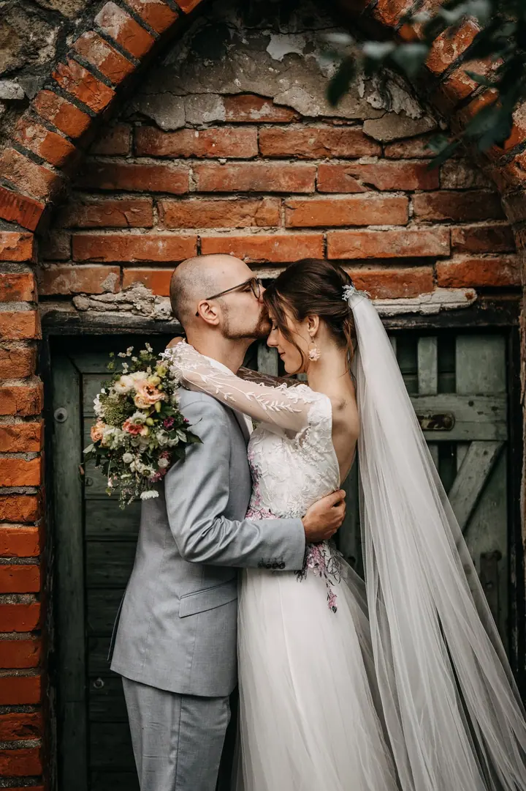
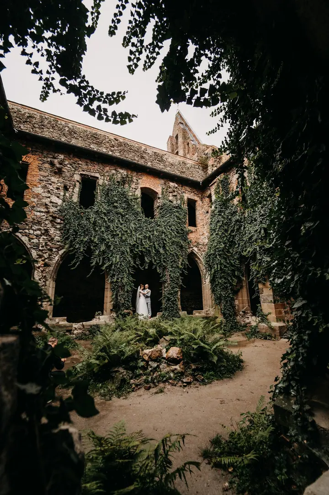
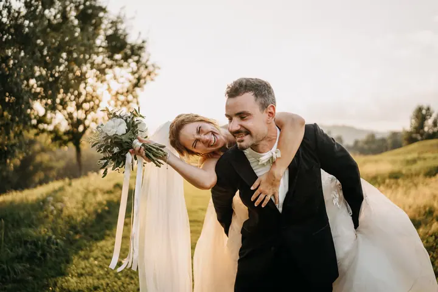
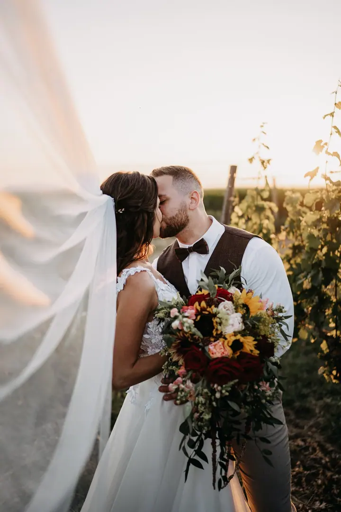

jedna
Svatební focení
Váš svatební příběh vyprávím bez scénáře, přirozeně a bez kýče. Fotím emoce a okamžiky, přílišné pózování není můj šálek kávy.


Jmenuji se Jiří Zamazal, ale klidně mi říkejte Jirka. Jsem svatební fotograf z Brna a fotím po celé republice. Nejraději fotím přirozené chvíle bez pózování, ke kterým se budete rádi vracet.
Více o mně
Co fotím
jedna
Váš svatební příběh vyprávím bez scénáře, přirozeně a bez kýče. Fotím emoce a okamžiky, přílišné pózování není můj šálek kávy.
dvě
Zhruba hodina focení, při které se poznáme a vy si zvyknete na objektiv. Fotky pak můžete použít na oznámení, výzdobu nebo do fotoknihy.
tři
Fotím chvíle plné úsměvů a lásky s vašimi blízkými. Je jedno, kdo to bude, podmínkou je láska v jakékoliv podobě.
Firmy, výrobky, koncerty, festivaly i business portréty, u kterých rád pracuji s okolním prostředím. Vaše umění převedu do inovativních a zajímavých fotografií.

Bez scénáře, přirozeně a bez kýče.


Za objektivem
Svůj první foťák jsem dostal od rodičů asi ve dvanácti letech a fotil jsem s ním, co se dalo: psy, kočky a přírodu. Na multimediální střední škole jsem si koupil první zrcadlovku a začal fotit pro známé a rodinu. Během vysoké školy pak přišly první zakázky a klienti začali přibývat.
Dnes působím hlavně jako svatební fotograf, ale fotím i rodiny, páry, portréty a komerční a reportážní zakázky. Ve svatební den je vaším jediným úkolem hodit starosti za hlavu a pořádně si to užít. Já jsem tam od toho, abych váš svatební příběh psal a vy si ho pak mohli kdykoliv znovu připomenout.
Fotím na bezzrcadlovky Sony a snažím se, aby focení bylo uvolněné a bez nuceného pózování. Nechci vám ukazovat jen deset nejlepších fotek z každé svatby, a tak u mě najdete i téměř kompletní svatební galerie. Uvidíte z nich, na co se při focení zaměřuji a co ode mě můžete čekat.
Jiří
Jestli vám moje fotky sedí a jste naladěni na stejnou vlnu, napište mi přes formulář, e-mail nebo sociální sítě.
Odpovím vám, potvrdím termín a rád poradím s časem, místem i oblečením.
Pár dní předem se domluvíme a podle předpovědi počasí případně upravíme čas. Na místě vám všechno vysvětlím a pak se postarám o přirozenou a uvolněnou atmosféru.
U párového focení vám pošlu předvýběr, ze kterého si vyberete fotky k úpravě. Upravené fotografie dostanete v online galerii, kterou můžete sdílet s celou rodinou.
Portfolio
Fotografie jsou ilustrační
Otázky
Sídlím v Brně, ale svatby i další focení beru v Praze a po celé České republice. U párového, rodinného a předsvatebního focení je doprava do 30 km zdarma.
Poznáme se navzájem i s průběhem focení, takže novomanželské focení pak bude hračka. Můžeme si navíc počkat na hezké počasí a západ slunce a fotky využít třeba na oznámení nebo svatební výzdobu.
Předsvatební balíček LOVE stojí 2 900 Kč, párové nebo těhotenské focení 3 200 Kč a rodinné focení pro 3 a více osob 4 000 Kč. V ceně je přibližně hodina focení, 20 upravených fotografií a online galerie.
U párového, rodinného a předsvatebního focení dostanete upravené fotografie do 4 týdnů v online galerii. Termín dodání svatebních fotek si domluvíme podle zvoleného balíčku.

Napište pár vět o tom, co si představujete. · +420 777 471 435